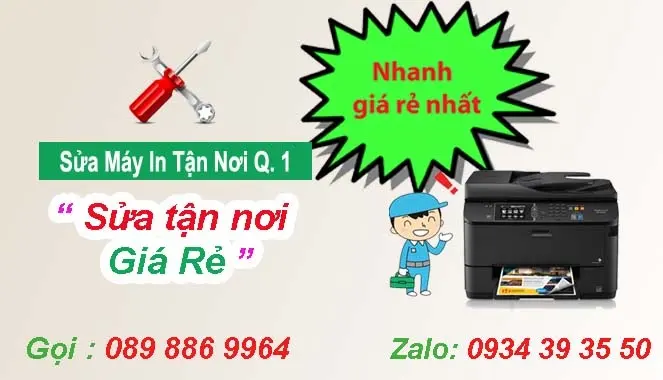
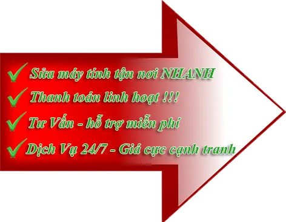
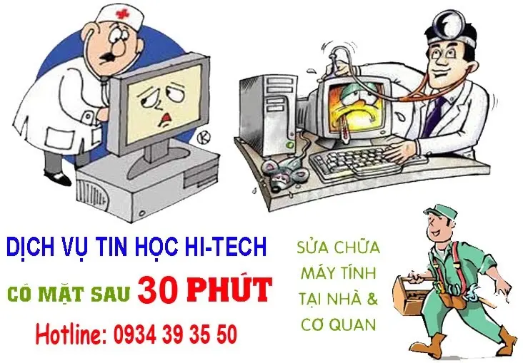

Sửa Máy Tính Quận 1
SỬA MÁY TÍNH TẠI NHÀ QUẬN 1
Công Ty Tin Học Hi-Tech: chuyên sửa máy in ở quận 1, Sửa máy tính tại nhà giá rẻ, nạp mực máy in các loại Hp - canon - samsung - Brother - Ricoh - Xeroc .... Địa chỉ tại Tk 12/21 Bến Chương Dương, Phường Cầu Kho, quận 1, Tel: 089 886 9964 - Zalo 0934393550

Sửa Máy Tính Tận Nơi Ở Quận 1:
- Sửa máy Tính Quận 1 các loại Hp - Canon - Samsung - brother - Panasonic ...
- Sửa máy in trắng đen, máy in màu, máy in bill, máy in hóa đơn ...
- Dịch vụ sửa chữa tại nhà khách hàng ở quận 1
- Sửa máy tính tại quận 1 giá rẻ có bảo hành Uy tín
- Thay trục ép bao lụa, sửa kẹt giáy máy in ...
- Dịch vụ sửa chữa máy in tận nơi - tại nhà khách hàng ở quận 1
- Kỹ thuật viên luôn túc trực tại quận 1 có mặt 20 phút
- Khách phục sửa chữa nhanh - giá rẻ
Sửa chữa máy tính quận 1 - Hỗ trợ Dịch vụ Uy Tín
- Nhận bảo trì định kỳ máy tính, máy Tính ở quận 1
- Công ty Tin Học Hi-Tech ở quận 1 nhận nạp mực máy in, sửa máy in công nợ quận 1 cuối tháng với các công ty, doanh nghiệp có nhu cầu
- Nhận sửa máy in có xuất hóa đơn VAT theo nhu cầu khách hàng.
- Tại quận 1, tin học Hi-Tech có sửa máy in chủ nhật, sửa máy in buổi tối ở quận 1
Sửa lỗi máy in quận 1 thường gặp như:
- Sửa lỗi máy in ra toàn giấy trắng
- Máy in không nhận được lệnh in từ máy tính
- Sửa máy in bị kêu to
- Sửa lỗi máy in bị kẹt giấy
- Máy in ra nhiều tờ một lúc
- Sửa hộp mực máy in bị lem
- Sửa lỗi may in không kéo giấy
- Lỗi máy in bị nhòe, bị mờ chữ ...
- Lỗi máy in in ra có xọc đen
- máy in bị lem mực từ trên xuống dưới
- sửa lỗi máy in bị sọc và không ra chữ ....
- Thay bao lụa máy in canon - hp
- Thay trục ep - lô sáy máy in canon - hp - Brother ...
- Thay trục từ, trục xạc máy in
- Thay Trống drum máy in các loại hp canon samsung brother ....
Ngoài dịch vụ sửa máy in giá rẻ quận 1, Hi-tech còn sửa máy tính tại nhà quận 1, cài đặt windown và các phần mềm ứng dụng, nạp mực in giá rẻ, lắp đặt hệ thống mạng, tổng đài, camera quan sát, Thi công hệ thống mạng văn phòng.
Khi quý khách hàng có nhu cầu cần sửa máy in nhanh ở quận 1 vui lòng liên hệ: Tel: 089 886 9964 hoặc nhắn tin Zalo: 0934 393 550. Kỹ thuật viên sẻ điến ngay

TIN HỌC HI-TECH
TK 12/21 Bến Chương Dương, P. Cầu Kho, Quận 1
1/19 Hồng Lạc, P. 10, Quận Tân Bình
Ngoài dịch vụ sửa máy in tại nhà quận 1: Hi-Tech còn nhận sửa máy in tại cửa hàng ở các quận như:
- Sửa máy in quận 3
- Sửa máy in tận nơi quân 5
- Cửa hàng sửa máy in quận 10
- Sửa máy in tại quận bình thạnh
- Công ty sửa máy in quận phú nhuận
- Sửa máy in ở quận tận bình
- sửa máy in tại nhà quận tân phú
DỊCH VỤ SỬA CHỮA MÁY TÍNH TẠI NHÀ QUẬN 1 CHUYÊN NGHIỆP:
Trung tâm tin học Hi-Tech : Chuyên sửa máy in tại quận 1, sửa máy tính tại nhà giá rẻ, dịch vụ tận nơi, Nạp mực in tại nhà quận 1
Sửa máy tính tại quận 1 uy tín
Đối với những lỗi máy tính, máy in nhẹ, chúng tôi sẻ hổ trợ sửa chữa miễn phí cho khách hàng qua phần mềm teamview hoặc điện thoại 089 886 9964
Những lỗi máy tính thường gặp:
- Cài đặt hệ điều hành win XP, Win 7, win 8, win 10
- Máy tính chạy chậm, đơ máy, treo máy...
- Không truy cập được mạng nội bộ hoặc mạng internet
- Lỗi màn hình máy tính như màn hình bật không lên hoặc lên thì trắng màn hình,...Cứu dữ liệu do xóa nhầm, format,...
- Kết nối các máy tính , máy in trong cùng hệ thống mạng. Lắp wifi, cấu hình wifi
- Cài đặt phần mềm diệt viruts
- Thay thế linh kiện của máy tính trong trường hợp linh kiện bị hỏng ví dụ như cháy RAM, ổ cứng bị hỏng,..
Khi máy tính, máy in bị hỏng hóc, cần sửa chữa ngay để phụ vụ công việc hãy liên hệ với chúng tôi: 0934 39 35 50. sẻ có kỹ thuật đến ngay để khắc phục nhanh chống cho Quý khách

Hỗ trợ - Tư vấn miến phí máy tính, máy in: 089 886 9964
1. Dịch vụ sửa chữa máy tính tận nơi quận 1.
- Cài đặt các hệ điều hành như: Windows XP, windows 7, windows 8, windows 8, windows 10 (32 bit và 64 bit), windows Server, Mac OS, linux, unix tùy theo cấu hình máy tính, laptop theo yêu cầu của quý khách hàng.
- Cài driver: máy tính bàn, laptop, macbook, máy in, scan,…
- Cài đặt và diệt virus: TREND MICRO, AVIRA, AVG, Kaspersky, BKAV, Avast,…
- Cài đặt ứng dụng ngành văn phòng, ứng dụng ngành thiết kế, ứng dụng ngành xây dựng, kế toán, giáo dục và các ngành nghề khác nếu có yêu cầu từ khách hàng ví dụ như:
- + Phần mềm cơ bản: winrar, winzip, front, codec media,..
- + Phần mềm văn phòng: Office, PDF, HKKT,..
- + Phần mềm đồ họa: Photoshop, corellDraw, autoCAD,..
- + Phần mềm cá nhân: kế toán, quản lý dữ liệu,..
- +Game: online, offline,…
- Sửa lỗi máy treo, khởi động lại hoặc máy chậm.
- Lắp ráp cài đặt xử lý các sự cố phần cứng cho máy tính hay laptop như: máy mất nguồn, đổ nước vào bàn phím, sự cố về pin, âm thanh, màn hình, RAM,…
- Thi công lắp đặt, sửa chữa hệ thống mạng nội bộ LAN, WAN, Server,.
- Lắp đặt, khắc phục sự cố phần cứng máy tính, laptop.
- Cài đặt và chia sẻ hệ thống máy in, máy scan, máy photocopy,…
- Vệ sinh máy tính bàn, laptop, macbook,…
- Phục hồi, cấp cứu dữ liệu nếu bạn đã xóa hay vô tình bị người khác xóa dữ liệu, bạn cảm thấy lo lắng nếu dữ liệu đó vô cùng quan trọng, hãy để công ty chúng tôi giúp bạn giải quyết các vấn đề đó bao gồm: dữ liệu bị xóa, virus tấn công, ghost máy, hư hỏng do nhiệt độ cao hay nơi ẩm ướt,…
- Thay thế, cung cấp linh kiện chính hãng.
- Phục hồi mật khẩu bị mất do các lý do: xóa password hệ điều hành, quên password, mật khẩu bị người khác thay đổi,…
- Nâng cấp máy tính:với nguồn linh kiện chính hãng. Chúng tôi sẽ cung cấp đến khách hàng những linh kiện để nâng cấp máy tính một cách tốt nhất với giá cả cạnh tranh.
Cam kết chất lượng dịch vụ sửa chữa máy tính tại quận 1
- Chúng tôi đảm bảo sẽ sửa chữa máy cho quý khách hàng tối đa 02 ngày kể từ ngày nhận máy.Nếu trong trường hợp vượt quá thời gian trên chúng tôi sẽ gọi điện thông báo trước cho khách hàng
- Chúng tôi luôn đảm bảo, laptop của khách hàng luôn còn nguyen vẹn linh kiện sau khi nhân viên chúng tôi nhận sửa chữa.
- Những dữ liệu bảo mật của khách hàng luôn được bảo mật trong quá trình chúng tôi nhận sửa chữa.
- Chúng tôi sẽ hoàn lại 100% chi phí nếu không sửa được lỗi trên máy tính của quý khách hàng hoặc quý khách hàng không hài lòng với lỗi đã được khắc phục
Kỹ thuật viên của chúng tôi luôn túc trực tại các quận Tp.HCM, khi Quý khách gọi điện 0934 39 35 50, trong vòng 30 phút sẻ có kỹ thuật đến sử lý cho quý khách
với dịch vụ sửa chữa máy tính tận nơi của chúng tôi luôn có những chính sách khuyến mãi cho những khách mới và hổ trợ tốt nhất đối với những khách củ. hãy đến với dịch vụ sửa chữa máy tính tận nơi Tp.HCM để được phục vụ tốt nhất
2. Dịch vụ sửa chữa máy in quận 1- mực in.
- Nạp mực máy in samsung giá rẻ tại quận 1
- Thay mực máy in tại quận 1
- Đổ mực máy in phun màu tận nơi quận 1
- Nạp mực máy in tận nơi: HP - Canon - Brother - Lexmark...
- sửa máy in bị kẹt giáy, rách bao lụa .... tận nơi giá rẻ quận 1
- Thay Ruy băng máy in kim epson lq 300, Lq 310, Lq 2190 ...
- Sửa láp top tận nơi chuyên nghiệp tại quận 1
- Thay bàn phím, mày in, nâng cấp Ram tại nhà chuyên nghiệp
- Công ty bơm mực in quận 1
- Cửa hàng sửa máy in tại nhà quận 1
Tags:
- Cửa hàng sửa máy in quận 1
- Công ty sửa máy tính tại nhà quận 1
- Sửa máy in giá rẻ quận 1
- Shop sửa máy in ở quận 1
- Địa chỉ sửa máy in quận 1
- cửa háng sửa máy tính uy tín tại quận 1
- Nơ sửa máy in giá rẻ quận 1
- Sửa máy in quận 1
- Sửa máy in quận 3
- Sửa máy in quận bình thạnh
- Sửa máy in quận 10
- Sửa máy in quận tân bình
- Nạp mực máy in quận 1
- Bơm mực máy in quận 3
- Nạp mực in quận 5
- Thay mực máy in quận 10
- NHỮNG CÂU HỎI THƯỜNG GẶP KHI SỬ DỤNG THUÊ MÁY PHOTOCOPY Những câu hỏi thường gặp khi sử dụng thuê máy photocopyDịch vụ
- 16 PHẦN MỀM PHỤC HỒI DỮ LIỆU MIỄN PHÍ Chương trình phục hồi dữ liệu nhằm giúp phục hồi các tập tin của bạn vô tình xóa mất. các phần mềm...